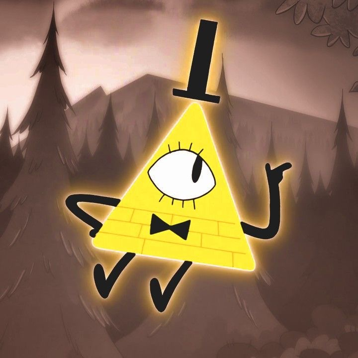
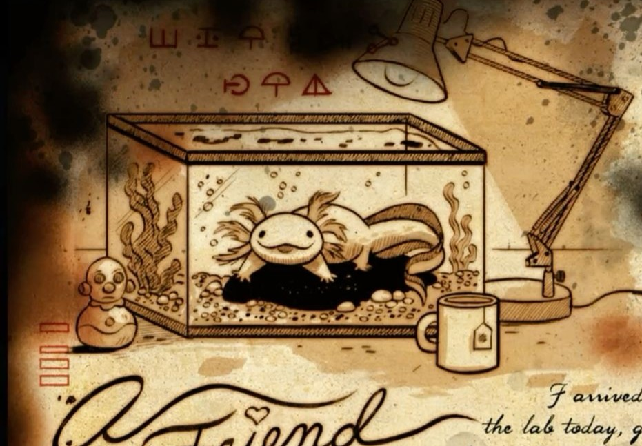
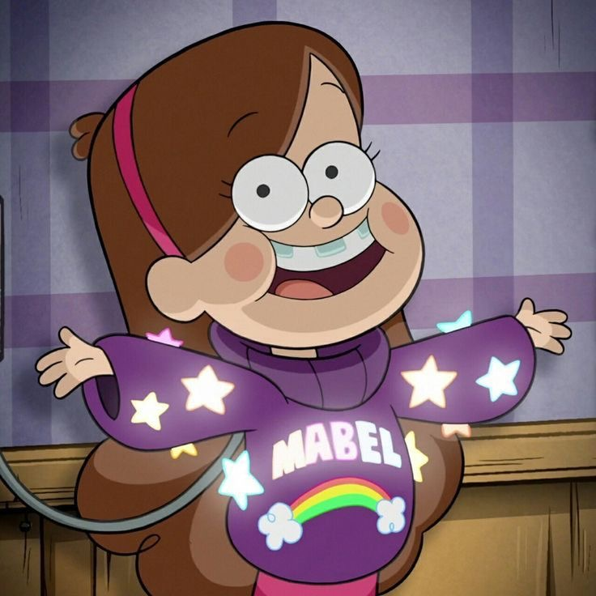

Gravity Falls Secret Files
Click on any note or evidence to open the official government case file.

The real author of Journal 3? 618 THE CONSERVATION OF TWINS
THE CONSERVATION OF TWINS

PROJECT: REINCARNATION Dipper's real name is...
!-- WYSTYLIZOWANA KARTECZKA Z TRÓJKĄTEM I GLITCHEM -->Cipher Section
zhofrph wr judylwb idoov
Caesar cipher, shift 3
OPENING CASE FILE...

CONFIDENTIAL
Subject: The Six-Fingered Author
Status: Missing since 1982
Description: The mysterious individual who documented the paranormal anomalies of Gravity Falls in three hidden notebooks.
Investigation Notes: Traces leads to a hidden underground bunker beneath the forest. High risk of technological traps.